Jeżeli zbiór składa się ze skończonej liczby liczb, to na osi liczbowej zaznaczymy
tylko punkty.
Zbiór \(A = \{2, 5, 6\}\) zaznaczony na osi liczbowej, to: 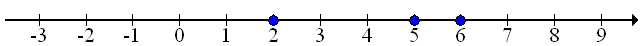
Zbiór \(B = \{-3, -1, 0, 4\}\) zaznaczony na osi liczbowej, to: 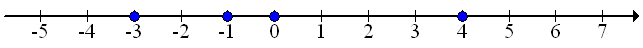
Zbiór \(C = \{1, 2, 3, 4, 5, 7\}\) zaznaczony na osi liczbowej, to: 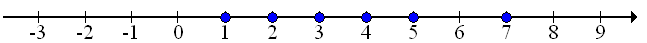
Jeżeli zbiór jest przedziałem, to na osi liczbowej zaznaczymy cały przedział
liczbowy.
Zbiór \(A = (2, 5)\) zaznaczony na osi liczbowej, to: 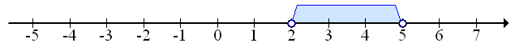
Zbiór \(B = (-1, 4)\) zaznaczony na osi liczbowej, to: 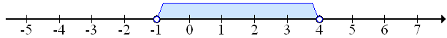
Zbiór \(C = (-3, 0)\) zaznaczony na osi liczbowej, to: 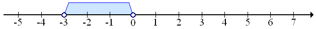
Zbiór \(D = \langle -2, 1\rangle \) zaznaczony na osi liczbowej, to: 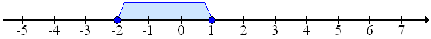
Zbiór \(E = \langle -3, 0)\) zaznaczony na osi liczbowej, to: 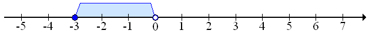
Zbiór \(F = (-4, 2\rangle \) zaznaczony na osi liczbowej, to: 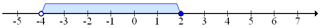
Jeden zbiór może składać się z kilku przedziałów. Wówczas w zapisie takiego
zbioru poszczególne przedziały łączy znaczek \(\cup \).
Zbiór \(A = (-2, 1)\cup (2, 3) \) zaznaczony na osi liczbowej, to: 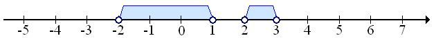
Zbiór \(B = (-5, -2) \cup (0, 2) \) zaznaczony na osi liczbowej, to: 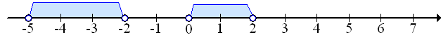
Zbiór \(C = (-3, 0) \cup (0, 5) \) zaznaczony na osi liczbowej, to: 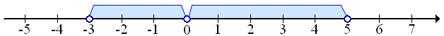
Zbiór \(D = \langle -2, 1\rangle \cup (2, 6) \) zaznaczony na osi liczbowej, to:
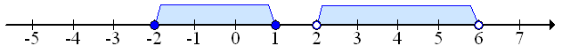
Zbiór \(E = \langle -5, -3) \cup (-1, 1) \cup (2, 5\rangle \) zaznaczony na osi
liczbowej, to: 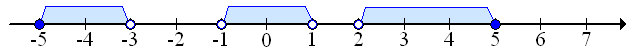
Czasami jeden zbiór może składać się z pojedynczych liczb oraz z przedziałów.
Zbiór \(A = (-2, 3) \cup \{-3, 4, 6\} \) zaznaczony na osi liczbowej, to: 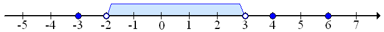
Zbiór \(B = (-5, -1) \cup \{0\} \cup \langle 1, 5) \) zaznaczony na osi liczbowej,
to: 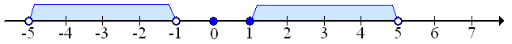
Zbiór \(C = (-3, -1) \cup \{0\} \cup (0, 5\rangle \) zaznaczony na osi liczbowej,
to: 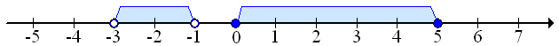